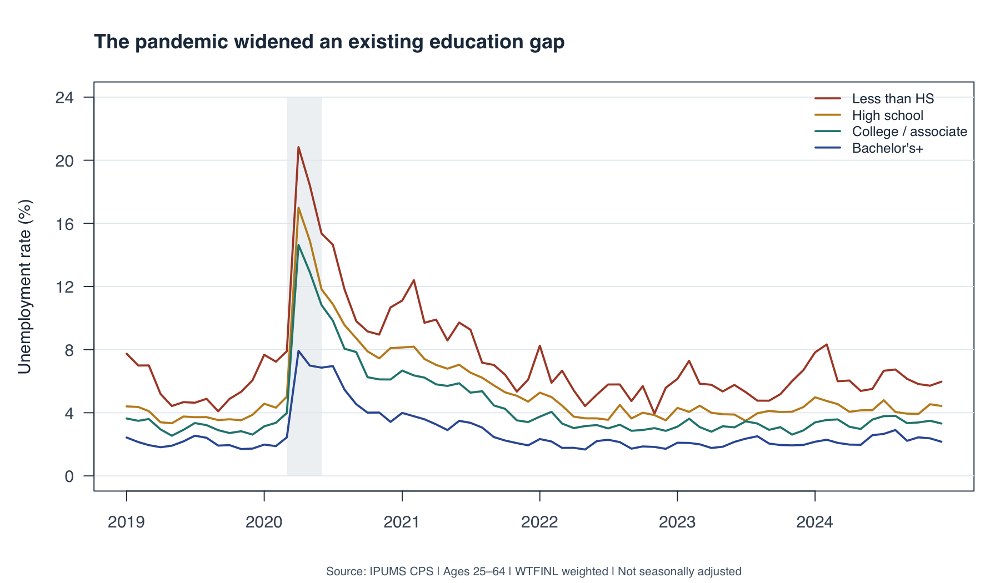
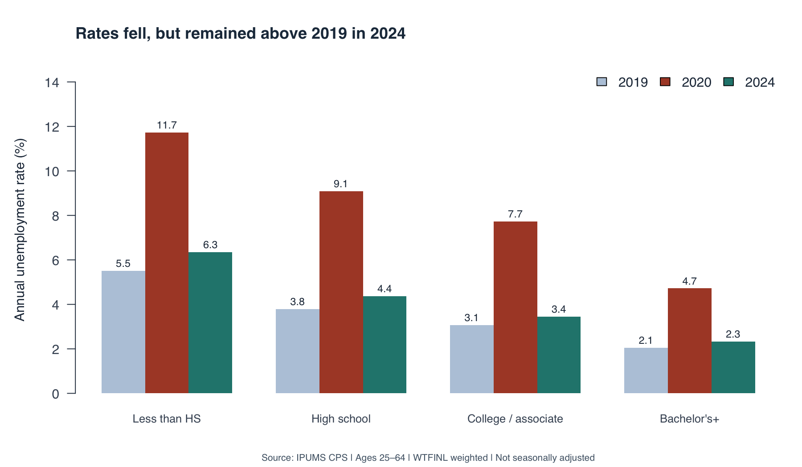
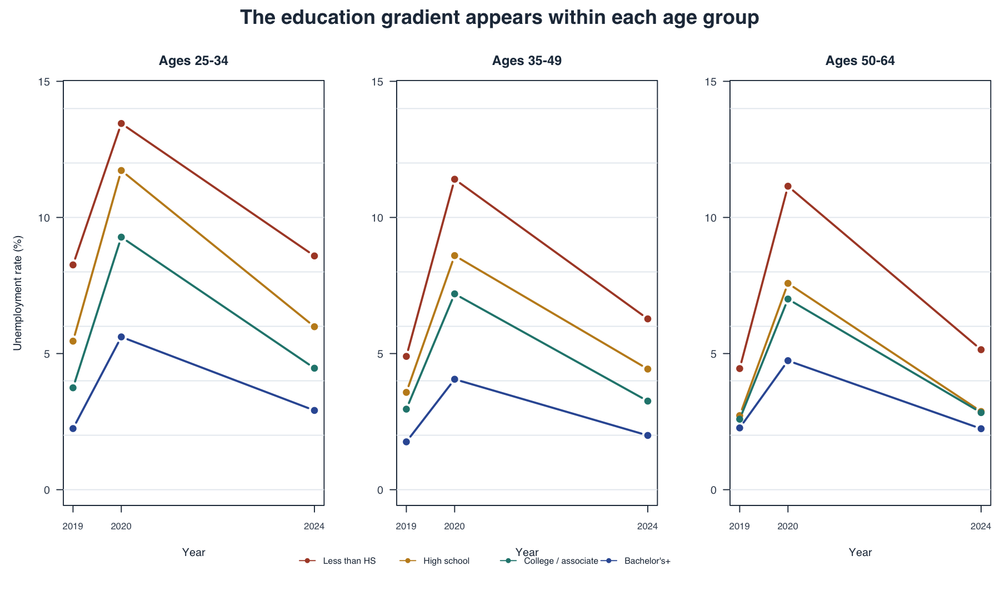

Show R code
# From the post3 folder, after running analyze.R with your local extract paths:
s <- readRDS("summary.rds")
source("plots.R")
draw_figures(s)What weighted CPS data reveal about working-age adults, 2019–2024
September 28, 2026
Did the pandemic erase the unemployment advantage associated with more education? For someone deciding how to prepare for the labor market, this question matters because a degree may be associated with stability as well as earnings. I use IPUMS Current Population Survey (CPS) microdata to compare four education groups before the pandemic, during its disruption, and through 2024. The story is not that college graduates escaped unemployment, but that the size of the shock and the level of risk differed substantially.
The extract contains all 72 Basic Monthly samples from January 2019 to December 2024, restricted to ages 25–64. This focuses on working-age adults beyond the usual college years. I group education into less than high school, high school, some college or an associate degree, and a bachelor’s degree or higher. These groups describe completed education, not current enrollment.
Every estimate uses WTFINL, the monthly person weight. The unemployment rate is weighted unemployed people divided by the weighted civilian labor force, not all adults:
\[ u_g = 100\frac{\sum_{i\in g} w_i\,1(\text{unemployed}_i)} {\sum_{i\in g} w_i\,1(\text{employed or unemployed}_i)}. \]
People outside the labor force do not enter this denominator. Annual rates divide the sum of monthly weighted unemployment totals by the sum of monthly weighted labor-force totals. They are ratios of annual-average levels, not simple averages of monthly percentages. All figures are not seasonally adjusted.

The monthly view reveals the abrupt disruption that annual averages can hide. All four groups experienced a sharp increase in spring 2020, followed by a decline. The spike was much larger for adults without a high school diploma than for college graduates. Education differences were visible before the pandemic and persisted afterward. The lines therefore suggest unequal exposure to a shared shock, rather than two entirely separate labor markets.

Among adults without a high school diploma, unemployment rose from 5.5% in 2019 to 11.7% in 2020. For adults with a bachelor’s degree or higher, it rose from 2.1% to 4.7%. The difference between these groups widened from 3.4 to 7.0 percentage points.
By 2024, their rates had fallen to 6.3% and 2.3%, respectively. Each group’s 2024 estimate remained above its 2019 value. This is a descriptive comparison, not a claim that these small remaining differences are statistically significant.

Education groups may contain different mixes of younger and older workers. Splitting the sample into ages 25–34, 35–49, and 50–64 checks whether that mix alone explains the pattern. The broad education gradient appears within each age band, including during the pandemic. However, these are still broad groups: occupation, industry, experience, and other characteristics may differ within them. This is not an age-adjusted causal estimate of a degree’s value.
Higher education was associated with lower unemployment throughout this period, but it did not eliminate vulnerability. For workforce planning, the figures support examining job-search assistance and retraining needs among adults with less education; they do not establish which intervention works best.
CPS respondents can appear in multiple months, so the 3,835,958 retained records are person-month observations, not unique people. The charts present weighted point estimates without confidence intervals. Pandemic-era collection disruptions and lower response rates also warrant caution. Finally, unemployment alone cannot reveal whether people left the labor force, accepted fewer hours, or experienced wage losses.
Source: IPUMS CPS, University of Minnesota, using underlying U.S. Census Bureau and Bureau of Labor Statistics data. Extract created September 27, 2026. Education definitions follow IPUMS EDUC documentation.
Download the code and grouped summaries, analysis script, plotting script, and reproduction instructions. The GitHub repository contains this post under blog/posts/post3/. Licensed microdata are not redistributed; registered users can recreate the extract using the documented selections.